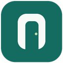

روزنه؛ مسیر ابزارهای گوگل
نسخهٔ ۰.۵.۰ · Chrome دسکتاپ
روزنه به خروجی واقعی Tor یا پروکسی محلی شما وصل میشود. کشور و پذیرش IP را نمیتوان با تغییر زبان، DNS یا ظاهر صفحه تضمین کرد.
نصب و فعالسازی
- ZIP را استخراج کنید و پوشهای را که manifest.json داخل آن است نگه دارید.
- در chrome://extensions، Developer mode و سپس Load unpacked را بزنید. برای ارتقای نسخهٔ نصبشده فایلها را در همان پوشه جایگزین و Reload کنید.
- در روزنه «تنظیم مسیر اتصال» را باز کنید. Tor Browser با پورت 9150 پیشفرض است؛ باید روی همین دستگاه باز و متصل بماند.
- اگر برنامهٔ VPN یا تونل SSH شما پروکسی محلی دارد، نوع SOCKS5 یا HTTP و پورت آن را انتخاب کنید. پورت UDP در WireGuard، پورت پروکسی نیست.
- مسیر را فعال و اتصال را آزمایش کنید. دکمههای سرویس در حالت خاموش نیز ابتدا مسیر انتخابشده را فعال میکنند و بعد سایت را باز میکنند.
اگر Gemini خطای کشور یا 403 داد
موفقیت Flow یا آزمایش Tor، پذیرش خروجی توسط Gemini را اثبات نمیکند. در بررسی ۴ اکتبر ۲۰۲۶ چند خروجی آمریکا HTTP 403 دادند و بعضی خروجیهای کشورهای پشتیبانیشده صفحهٔ عمومی Gemini را باز کردند. پاسخ عمومی HTTP 200 هنوز تأیید ورود و پاسخ واقعی نیست.
توصیهٔ قدیمی به یک IP ثابت Tor حذف شده است. آن IP ممکن است از دسترس خارج یا رد شود. راه پایدارتر، خروجی قابلاعتماد و آزمودهشده در کشور پشتیبانیشده است؛ آمریکا هم تضمین پذیرش ندارد. پروکسی محلی روزنه به شما امکان میدهد از خروجی VPN یا SSH خودتان استفاده کنید.
اتصال به سرور خودتان با SSH
ssh -N -D 127.0.0.1:1080 USER@YOUR_SERVER
به سرور و حساب SSH خودتان نیاز دارید. بررسی کلید میزبان را فعال نگه دارید. پس از اتصال، در روزنه SOCKS5 و پورت 1080 را انتخاب کنید. روزنه سرور یا اشتراک فراهم نمیکند.
خروجی Tor
کشور Tor در فایل torrc تنظیم میشود؛ API پروکسی Chrome مدار یا کشور Tor را تغییر نمیدهد. ابتدا نسخهٔ پشتیبان بگیرید. در مک فایل در مسیر زیر است:
~/Library/Application Support/TorBrowser-Data/Tor/torrc
در Windows زیر پوشهٔ Tor Browser مسیر Browser\TorBrowser\Data\Tor\torrc را بررسی کنید. یک خط ExitNodes داشته باشید؛ مثلاً این مجموعه را آزمایش کنید:
ExitNodes {de},{nl},{gb},{ca}برای آزمایش آمریکا مقدار {us} را جایگزین کنید. محدودکردن خروجی انتخاب مدار را محدود میکند؛ این پروژه ابزار ناشناسماندن نیست. هیچ کشور یا IP مشخصی تضمین دسترسی نمیکند. برای بازگشت مقدار قبلی را از پشتیبان برگردانید.
اتصال تازه و شرایط حساب
پس از تغییر خروجی، کار ذخیرهنشده را ذخیره کنید و Chrome را کامل ببندید و دوباره باز کنید؛ Tor یا پروکسی باز بماند. تغییر مدار سایت در Tor Browser الزاماً مدار Chrome را تغییر نمیدهد. حذف تمام کوکیها یا پروفایل برای این کار لازم نیست.
کشور و شرایط حساب سرویسها مستقلاند. برای AI Studio، حداقل سن و تأیید سن نیز مطرح است. کشورهای Gemini · کشورها و شرایط AI Studio · شرایط Flow
آزمایش و رفع خطای اتصال
Connection refused یعنی پورت محلی انتخابشده در دسترس نیست. از پورت کنترل Tor مثل 9151 استفاده نکنید. سرویس بررسی ممکن است پاسخ ندهد؛ خطای آزمایش بهتنهایی قطعی Tor را اثبات نمیکند. بررسی دستی Tor:
curl -q --noproxy '' --proxy socks5h://127.0.0.1:9150 --connect-timeout 10 --max-time 30 --fail --silent --show-error https://check.torproject.org/api/ip
در Windows از curl.exe استفاده کنید. خروجی ممکن است IP را نشان دهد؛ آن را برای گزارش عمومی حذف کنید. موفقیت سرویس را با پاسخ واقعی Gemini، دسترسی به محیط prompt در AI Studio و محیط پروژهٔ Flow بررسی کنید. تولید محتوا ممکن است اعتبار مصرف کند؛ روزنه هیچ تولیدی را خودکار آغاز نمیکند.
دامنهٔ اثر و خاموشکردن
google.com، googleapis.com، gstatic.com، googleusercontent.com و ggpht.com و زیردامنههایشان، و میزبانهای دقیق labs.google، accounts.youtube.com و check.torproject.org از پروکسی انتخابی عبور میکنند. Gmail و Drive هم تحتتأثیرند. سایر دامنهها از شبکهٔ معمول سیستم استفاده میکنند؛ VPN سیستم همچنان میتواند روی آنها اثر بگذارد. قواعد پروکسی پیشین سیستم برای این دامنهها هنگام روشنبودن PAC اعمال نمیشوند.
برای مقصدهای انتخابی مسیر مستقیم جایگزین وجود ندارد؛ خاموششدن پروکسی باعث خطای بارگذاری میشود. خاموشکردن روزنه فقط تنظیم خود افزونه را پاک میکند. Incognito و تمام ترافیک دستگاه، WebRTC و همهٔ سیگنالهای موقعیت تحت پوشش نیستند.
حریم خصوصی
مجوزها همان proxy و storage و سرویس بررسی Tor هستند. متن صفحه، گفتگو، کوکی، رمز و تاریخچه خوانده نمیشوند. IP آزمایش وارد گزارش نمیشود. پروکسی و مقصد نهایی IP اتصال را میبینند. پاسخ Google و گواهیها تغییر نمیکنند. Chrome متصل به Tor محافظتهای Tor Browser را ندارد؛ توضیح Tor.
۲۴ آزمون خودکار رفتار مسیر و بازکردن سرویسها را بررسی میکنند. گزارش دقیق آزمایش واقعی در VALIDATION.md است. برای استفادهٔ معمولی build یا Node.js لازم نیست؛ Windows و موبایل در این بررسی عملی آزمایش نشدهاند.